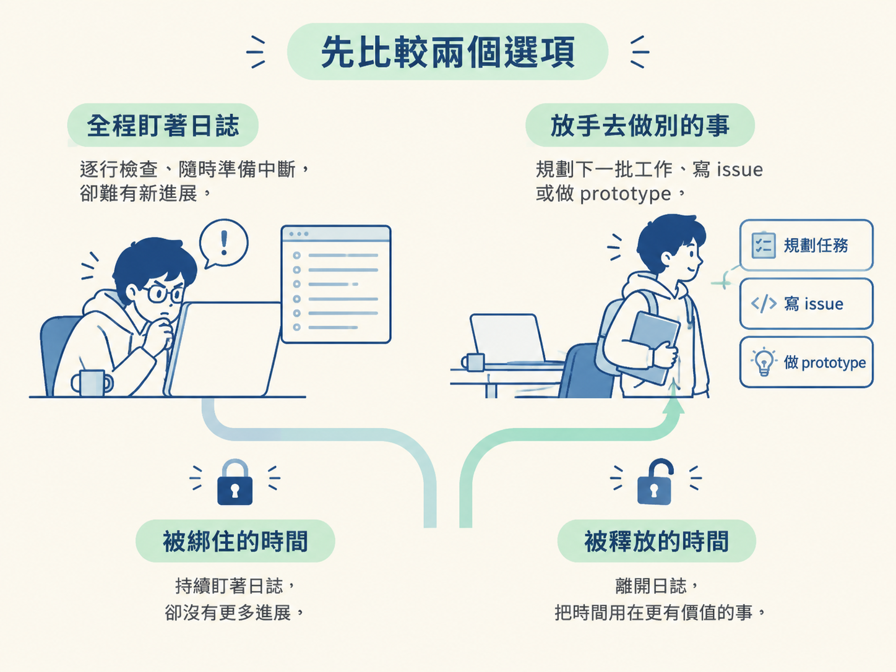
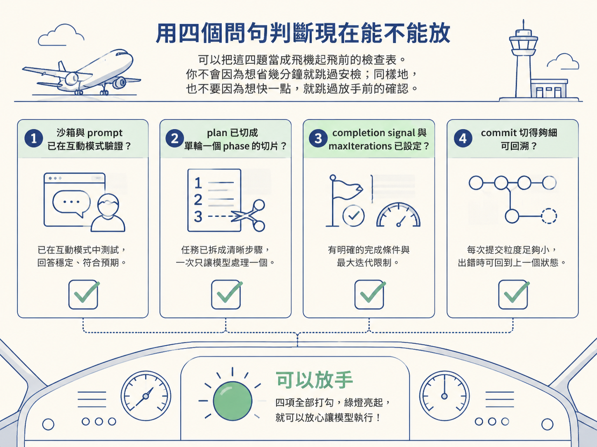
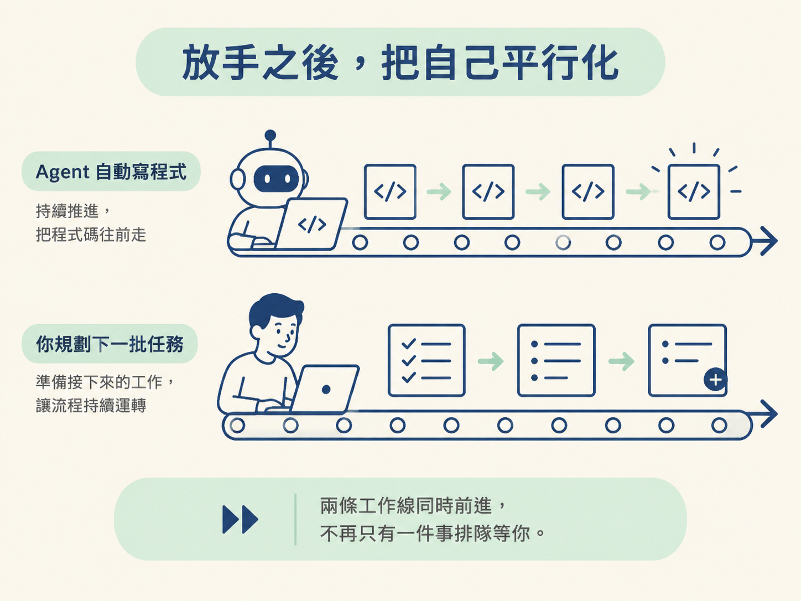

你剛按下 npx tsx sandcastle/main.ts，AFK 迴圈開始運轉。接下來，你要一直坐在螢幕前盯著日誌，還是可以離開座位，去準備下一批工作？
這個選擇其實是在兩股力量之間取捨：你想盯著，是因為還在建立信任，也擔心 agent 做出難以收拾的事；你想放手，則是因為如果每一輪都要親自監工，這個迴圈並沒有真正釋放你的時間。
這一節要做的決定很直接：什麼時候可以放手，以及放手之後，該把自己的時間投到哪裡。
| 全程盯著日誌 | 放手去做別的事 | |
|---|---|---|
| 你實際做的事 | 逐輪查看日誌，隨時準備中斷 | 規劃下一批工作、寫 issue，或製作 prototype |
| 適合的條件 | 第一次執行、沙箱或 prompt 還沒調好，或任務風險很高 | 沙箱已驗證、prompt 穩定，而且任務切片清楚 |
| 好處 | 出錯時能立刻踩煞車，也能快速了解系統行為 | 真正釋放你的時間，讓整體工作能平行推進 |
| 代價 | 你的時間仍被綁住，只是換一種方式親自監工 | 如果做錯，要靠 commit 與日誌在事後追查 |
這裡沒有永遠正確的選項。第一次跑一條新的流程時，盯著看反而是值得的投資，因為你正在校準 agent 的行為，也在調整 prompt。
等到沙箱、prompt 和任務切片都穩定後，繼續盯著每一行日誌，就像坐在自動扶梯旁邊，確認它每一階都有往上走：你花了力氣，卻沒有因此得到更多進展。這時候，放手才有意義。

不要只憑「這次應該沒問題」的感覺做決定。請逐一回答下面四個問題。四題都答「是」，你才有放手的本錢。
maxIterations 都設好了嗎？沒有完成訊號，也沒有迭代上限的迴圈，就像沒有煞車的車子，不適合放手。最糟的情況下，這兩個設定能保住你的時間與錢。可以把這四題當成飛機起飛前的檢查表。你不會因為想省幾分鐘就跳過安檢；同樣地，也不要因為想快一點，就跳過放手前的確認。

放手不是「不管它」，而是「先把方向對齊，再讓它自己走」。你必須先和 agent 對齊同一份計畫，讓它朝同一個方向前進，它才可能不需要你一路攙扶，自己走到終點。
沒有 plan 時，放手只是讓 agent 自由亂跑；跑得越久，偏離目標的距離可能越遠。相反地，當任務已經透過 grill、PRD 和垂直切片整理清楚，agent 才有一條可以循著走的路。
因此，AFK 迴圈不是規劃的替代品，而是讓規劃發揮複利的方式。你前面花時間整理的工作，會在這裡轉化成一段不需要你持續參與的產出。那些看起來比較慢的前置工作，正是後面能放心放手的原因。
那麼，agent 自己執行時，你要做什麼？答案不是發呆等它結束，而是去推進另一條工作線。
agent 在實作時，你可以規劃下一批任務、讀文件、寫 issue，或做 prototype，把尚未確定的設計先實際試出來。你不需要等這一輪完成，才開始思考下一步。
這就是「把自己平行化」：原本只有一條生產線，所有事情都得排隊等你處理；現在則變成兩條線同時前進。一條由 agent 寫程式，另一條由你準備接下來的工作。等你回頭查看時，程式碼已經往前走了一段，而下一輪的規劃也已經準備好。

放手並不是越早越好。遇到下面幾種情況，請把規則反過來：先不要放，留在流程裡確認。
第一，任務的設計方案還沒定。這時候應該先做 prototype，把未知問題試出來，也把你的設計取捨具體化，而不是讓 agent 根據一份模糊的計畫長時間實作。路都還沒畫好就放手，最後可能只得到一堆必須丟掉的程式碼。
第二，操作不可逆。如果牽涉到生產環境、資料庫 migration、金流，或任何刪除後無法恢復的操作，就算流程已經很穩，也要留人在閘門前確認。AFK 比較適合可以重來、可以透過 commit 回溯的工作。
第三，這是第一次跑新的沙箱或 prompt 組合。這時變數仍然太多，應先用互動模式跑一輪，確認 agent 讀得到檔案，也跑得動回饋迴圈，再交給它自動執行。
放手前問四題：沙箱與 prompt 驗證過了嗎？plan 切成單輪切片了嗎？完成訊號與迭代上限設好了嗎？commit 夠細、可以回溯嗎？四題都是「是」，就把時間投入下一輪規劃；有任何一題答不出來，就先留在鍵盤前。
這個節點會把實作變成一條能自己前進的生產線：你先準備好固定的 PRD 與 plan，再讓迴圈依照它們執行。
下一步還會再往前推一層：把「餵什麼任務」也交給 agent，讓它從 GitHub issue 佇列裡自己挑選下一個工作。到那時候，連「決定做什麼」都會成為迴圈的一部分。
放手不是不管，而是先對齊再放。能不能放，檢查四件事：沙箱與 prompt 驗證過了嗎？plan 切成單輪切片了嗎？煞車設好了嗎？commit 可以回溯嗎？四題都通過，就把時間拿去平行化自己，規劃下一批工作。設計尚未確定、操作不可逆，或正在第一次測試新的組合時，規則反過來：先別放。